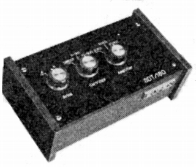

SDT-180

■価格 18,800円■型式 MC型カートリッジ用昇圧トランス■一次インピーダンス 2〜50Ω/ダイレクトを含め3段切替■負荷抵抗 ■昇圧比 ■周波数帯域 40-60,000Hz■クロストーク■全高調波歪率 ■重量 ■寸法 W×H×D�o■発売 1971〜72年頃■販売終了 1984年頃■備考 備考 価格は1973年頃のもの1975年頃は28,000円
バイパス可。入力2系統切替。
スペックスのインデックスへ